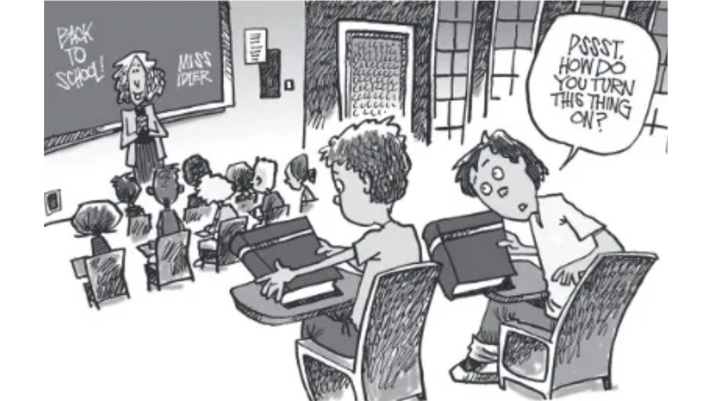
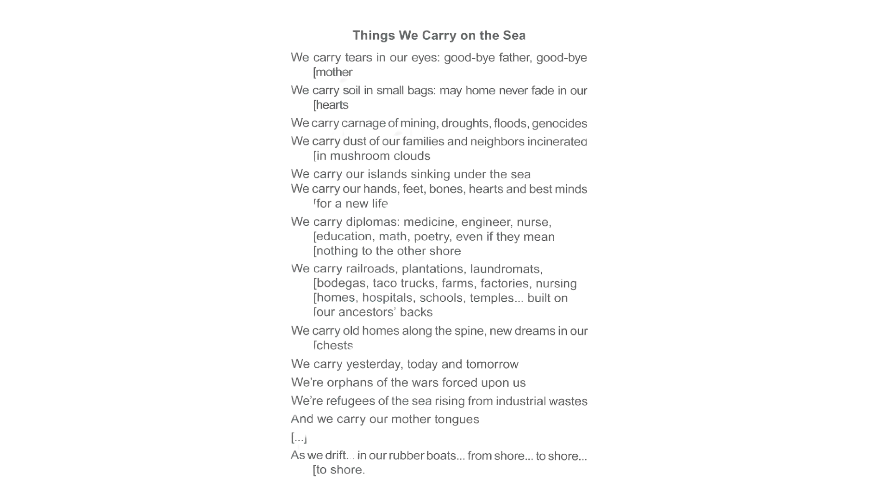
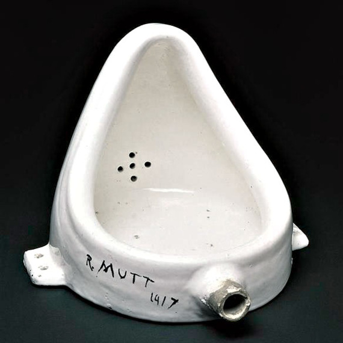
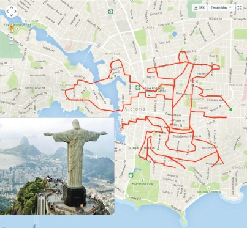
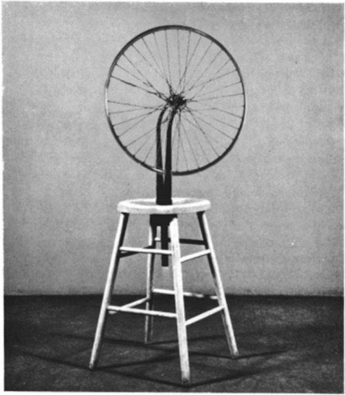
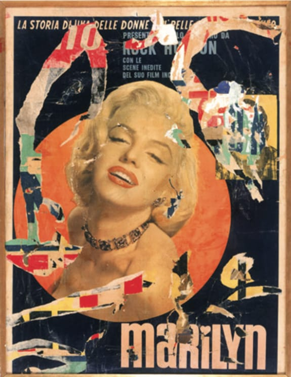
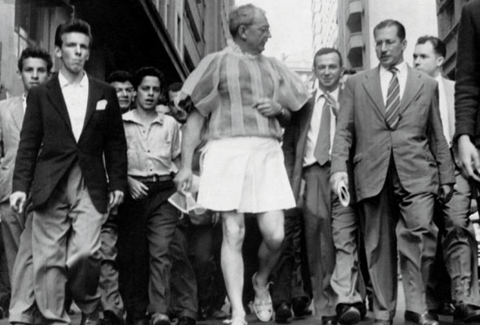
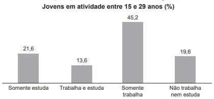

Questão 1
(Enem 2014)
Censura moralista
Há tempos que a leitura está em pauta. E, diz-se, em crise. Comenta-se esta crise, por exemplo, apontando a precariedade das práticas de leitura, lamentando a falta de familiaridade dos jovens com livros, reclamando da falta de bibliotecas em tantos municípios, do preço dos livros em livrarias, num nunca acabar de problemas e de carências. Mas, de um tempo para cá, pesquisas acadêmicas vêm dizendo que talvez não seja exatamente assim, que brasileiros leem, sim, só que leem livros que as pesquisas tradicionais não levam em conta. E, também de um tempo para cá, políticas educacionais têm tomado a peito investir em livros e em leitura.
LAJOLO, M. Disponível em: www.estadao.com.br. Acesso em: 2 dez. 2013.
Os falantes, nos textos que produzem, sejam orais ou escritos, posicionam-se frente a assuntos que geram consenso ou despertam polêmica. No texto, a autora
Gabarito explicado: d) CORRETA. A autora começa por falar da suposta crise nas práticas de leitura e, num segundo momento, informa que as pesquisas acadêmicas levam a crer que tal crise não existe.
Questão 2
(Enem/2017)
Essas moças tinham o vezo de afirmar o contrário do que desejavam. Notei a singularidade quando principiaram a elogiar o meu paletó cor de macaco. Examinavam-no sérias, achavam o pano e os aviamentos de qualidade superior, o feitio admirável. Envaideci-me: nunca havia reparado em tais vantagens. Mas os gabos se prolongaram, trouxeram-me desconfiança. Percebi afinal que elas zombavam e não me susceptibilizei. Longe disso: achei curiosa aquela maneira de falar pelo avesso, diferente das grosserias a que me habituara. Em geral me diziam com franqueza que a roupa não me assentava no corpo, sobrava nos sovacos.
RAMOS, G. Infância. Rio de Janeiro: Record, 1994.
Por meio de recursos linguísticos, os textos mobilizam estratégias para introduzir e retomar ideias, promovendo a progressão do tema. No fragmento transcrito, um novo aspecto do tema é introduzido pela expressão
Gabarito explicado: d) CERTA. Os elogios que as mulheres faziam ao paletó do homem eram, na verdade, irônicos. Quando ele percebeu isso, em vez de ficar ressentido, achou curiosa a ironia das moças: “Longe disso: achei curiosa aquela maneira de falar pelo avesso”.
Questão 4
O Ateneu
Leia as duas citações a seguir, extraídas do início e do final de O Ateneu:
“Lembramo-nos, entretanto, com saudade hipócrita, dos felizes tempos; como se a mesma incerteza de hoje, sob outro aspecto, não nos houvesse perseguido outrora e não viesse de longe a enfiada das decepções que nos ultrajam. Eufemismo, os felizes tempos, eufemismo apenas, igual aos outros que nos alimentam, a saudade dos dias que correram como melhores.
Bem considerando, a atualidade é a mesma em todas as datas. Feita a compensação dos desejos que variam, das aspirações que se transformam, alentadas perpetuamente do mesmo ardor, sobre a mesma base fantástica de esperanças, a atualidade é uma (...)”.
“Aqui suspendo a crônica das saudades. Saudades verdadeiramente? Puras recordações, saudades talvez, se ponderarmos que o tempo é a ocasião passageira dos fatos, mas sobretudo — o funeral para sempre das horas.”
(POMPEIA, Raul. O Atheneu (Chronica de saudades). Rio de Janeiro: Tipografia de Gazeta de Notícias, p 3-4 e 368, 1888.)
Com base nessas duas citações, é possível afirmar que, ao fim da narrativa de Sérgio sobre sua vida no colégio, o narrador
Questão 5
Enem 2017
A causa secreta
Garcia tinha-se chegado ao cadáver, levantara o lenço e contemplara por alguns instantes as feições defuntas. Depois, como se a morte espiritualizasse tudo, inclinou-se e beijou-a na testa. Foi nesse momento que Fortunato chegou à porta. Estacou assombrado; não podia ser o beijo da amizade, podia ser o epílogo de um livro adúltero [...].
Entretanto, Garcia inclinou-se ainda para beijar outra vez o cadáver, mas então não pôde mais. O beijo rebentou em soluços, e os olhos não puderam conter as lágrimas, que vieram em borbotões, lágrimas de amor calado, e irremediável desespero. Fortunato, à porta, onde ficara, saboreou tranquilo essa explosão de dor moral que foi longa, muito longa, deliciosamente longa.
ASSIS, M. A causa secreta. Disponível em: www.dominiopublico.gov.br. Acesso em: 9 out. 2015.
No fragmento, o narrador adota um ponto de vista que acompanha a perspectiva de Fortunato. O que singulariza esse procedimento narrativo é o registro do(a)
Gabarito explicado: D) CORRETA. A primeira vez que Fortunato é mencionado no texto é o momento em que ele, chegando à porta, fica surpreso ao ver como Garcia beija a defunta.
Questão 6
Enem 2017
João/Zero (Wagner Moura) é um cientista genial, mas infeliz porque há 20 anos atrás foi humilhado publicamente durante uma festa e perdeu Helena (Alinne Moraes), uma antiga e eterna paixão. Certo dia, uma experiência com um de seus inventos permite que ele faça uma viagem no tempo, retornando para aquela época e podendo interferir no seu destino. Mas quando ele retorna, descobre que sua vida mudou totalmente e agora precisa encontrar um jeito de mudar essa história, nem que para isso tenha que voltar novamente ao passado. Será que ele conseguirá acertar as coisas?
Disponível em: http://adorocinema.com. Acesso em: 4 out. 2011.
Qual aspecto da organização gramatical atualiza os eventos apresentados na resenha, contribuindo para despertar o interesse do leitor pelo filme?
Gabarito explicado: D) CORRETA. O fato de descrever algo que aconteceu, mas utilizar verbos no presente, desperta interesse nas pessoas (“Mas quando ele retorna, descobre que sua vida mudou totalmente”).
Questão 7
(Unicamp 2014)
Os diagramas abaixo ilustram a frequência percentual de indivíduos com diferentes tamanhos de bico, para duas espécies de tentilhões (gênero Geospiza) encontradas em três ilhas do arquipélago de Galápagos, no oceano Pacífico. As frequências de indivíduos com bicos de diferentes profundidades (indicadas pelas setas) são mostradas para cada espécie, em cada ilha. Sabendo-se que ambas as espécies se alimentam de sementes, indique a interpretação correta para os resultados apresentados.

Adaptado de Pianka, E.R. Evolutionary Ecology. Harper & Row, Publishers, New York, 397 pp. 1978. Em: http://goose.ycp.edu/~kkleiner/ecology/lectureimages/15finches.jpg
Gabarito explicado: B) Trata-se de um exemplo de deslocamento de caracteres resultante de competição entre as duas espécies na situação de simpatria.
Questão 9
(Unicamp 2013)
Considere um indivíduo heterozigoto para dois locos gênicos que estão em linkage, ou seja, não apresentam segregação independente. A representação esquemática dos cromossomos presentes em uma de suas células somáticas em divisão mitótica é:
Gabarito explicado: A) presença de sementes e ausência de frutos.
Questão 12
Enem 2019
Leia a definição de tsunâmi, extraída do site da Comissão Brasileira de Sítios Geológicos (SIGEP)
Grande onda ou sucessão de ondas marinhas que se deslocam através do oceano por milhares de
quilômetros em alta velocidade (podem viajar a mais de 700 km/h). Caracteriza-se por ter grande extensão,
chegando a ter mais de 100 km de comprimento, nas linhas da costa pode elevar-se a grande altura, (de 30
metros a 40 metros), e invadir violentamente as praias. Tsunâmi é um dos desastres naturais que podem, com
frequência, atingir dimensões catastróficas ao provocar a morte de milhares de pessoas. Um tsunâmi pode ter
várias origens.
Disponível em:sigep.cprm.gov.br/glossario/verbete/tsunami.htm Acesso em: 10 set. 2022
Dentre as origens desse fenômeno, é correto citar
Gabarito explicado: D) CORRETA. O fato de descrever algo que aconteceu, mas utilizar verbos no presente, desperta interesse nas pessoas (“Mas quando ele retorna, descobre que sua vida mudou totalmente”).
Questão 13
Enem 2019
Tratava-se agora de construir um ritmo
novo. Para tanto, era necessário convocar todas
as forças vivas da Nação, todos os homens que,
com vontade de trabalhar e confiança no futuro,
pudessem erguer, num tempo novo, um novo
Tempo. E, à grande convocação que conclamava
o povo para a gigantesca tarefa, começaram a
chegar de todos os cantos da imensa pátria os
trabalhadores: os homens simples e quietos, com
pés de raiz, rostos de couro e mãos de pedra, e
no calcanho, em carro de boi, em lombo de burro,
em paus-de-arara, por todas as formas possíveis e
imagináveis, em sua mudez cheia de esperança,
muitas vezes deixando para trás mulheres e filhos a
aguardar suas promessas de melhores dias; foram
chegando de tantos povoados, tantas cidades cujos
nomes pareciam cantar saudades aos seus ouvidos,
dentro dos antigos ritmos da imensa pátria... Terra
de sol, Terra de luz… Brasil! Brasil! Brasília!
MORAES, V.; JOBIM, A. C. Brasília, sinfonia da alvorada. III – A
chegada dos candangos. Disponível em: www.viniciusdemoraes.com.br. Acesso em: 14 ago. 2012 (adaptado)
No texto, a narrativa produzida sobre a construção
de Brasília articula os elementos políticos e
socioeconômicos indicados, respectivamente, em:
Gabarito explicado: D) CORRETA. O fato de descrever algo que aconteceu, mas utilizar verbos no presente, desperta interesse nas pessoas (“Mas quando ele retorna, descobre que sua vida mudou totalmente”).
Questão 14
Enem 2019
– O fenômeno da mobilidade populacional
vem, desde as últimas décadas do século XX,
apresentando transformações significativas no seu
comportamento, não só no Brasil como também em
outras partes do mundo. Esses novos processos
se materializam, entre outros aspectos, na
dimensão interna, pelo redirecionamento dos fluxos
migratórios para as cidades médias, em detrimento
dos grandes centros urbanos; pelos deslocamentos
de curta duração e a distâncias menores; pelos
movimentos pendulares, que passam a assumir
maior relevância nas estratégias de sobrevivência,
não mais restritos aos grandes aglomerados
urbanos.
OLIVEIRA, L. A. P.; OLIVEIRA, A. T. R. Reflexões sobre os deslocamentos populacionais no Brasil. Rio de Janeiro: IBGE, 2011
(adaptada).
A redefinição dos fluxos migratórios internos no
Brasil, no período apontado no texto, tem como
causa a intensificação do processo de
Gabarito explicado: D) CORRETA. O fato de descrever algo que aconteceu, mas utilizar verbos no presente, desperta interesse nas pessoas (“Mas quando ele retorna, descobre que sua vida mudou totalmente”).
Questão 15
Enem 2019
Leia a definição de tsunâmi, extraída do site da Comissão Brasileira de Sítios Geológicos (SIGEP)
Adam Smith (1723 - 1790) escreveu A Riqueza
das Nações, obra que se constitui como um
grande baluarte do capitalismo liberal. Acerca do
pensamento desse autor, assinale a alternativa
CORRETA.
Gabarito explicado: d) CORRETA. O fato de descrever algo que aconteceu, mas utilizar verbos no presente, desperta interesse nas pessoas (“Mas quando ele retorna, descobre que sua vida mudou totalmente”).
Questão 16
(Enem 2018)
Lava Mae:
Creating Showers on Wheels for the Homeless
San Francisco, according to recent city numbers, has 4,300 people living on the streets. Among the many problems the homeless face is little or no access to showers. San Francisco only has about 16 to 20 shower stalls to accommodate them.
But Doniece Sandoval has made it her mission to change that. The 51-year-old former marketing executive started Lava Mae, a sort of showers on wheels, a new project that aims to turn decommissioned city buses into shower stations for the homeless. Each bus will have two shower stations and Sandoval expects that they'll be able to provide 2,000 showers a week.
ANDREANO, C. Dísponível em: abcnews.go.com. Acesso: 26 jun. 2015 (adaptado).
A relação dos vocábulos shower, bus e homeless, no texto, refere-se a:
Gabarito explicado: A resposta correta é a opção b) criar acesso a banhos gratuitos para moradores de rua.
O texto fala de um projeto chamado Lava Mae, que consiste em transformar ônibus em estações de banho para moradores de rua.
Shower significa banho de chuveiro, bus significa ônibus e homeless significa morador de rua.
Questão 17
(Enem 2017)
Israel Travel Guide
Israel has always been a standout destination. From the days of prophets to the modern day nomad this tiny slice of land on the eastern Mediteranean has long attracted visitors. While some arrive in the ‘Holy Land’ on a spiritual quest, many others are on cultural tours, beach holidays and eco-tourism trips. Weeding through Israel’s convoluted history is both exhilarating and exhausting. There are crumbling temples, ruined cities, abandoned forts and hundreds of places associated with the Bible. And while a sense of adventure is required, most sites are safe and easily accessible. Most of all, Israel is about its incredibly diverse population. Jews come from all over the world to live here, while about 20% of the population is Muslim. Politics are hard to get away from in Israel as everyone has an opinion on how to move the country forward — with a ready ear you’re sure to hear opinions from every side of the political spectrum.
Disponível em: www.worldtravelguide.net. Acesso em: 15 jun. 2012.
Antes de viajar, turistas geralmente buscam informações sobre o local para onde pretendem ir. O trecho do guia de viagens de Israel:
Gabarito explicado: A resposta correta é a opção e) apresenta aspectos gerais da cultura do país para continuar a atrair turistas estrangeiros.
Ao descrever Israel, o guia de viagens afirma que existem templos desmoronando, cidades em ruínas, fortes abandonados e centenas de locais relacionados com a Bíblia.
Além disso, também é abordado o fato de o país ter uma população muito diversificada, composta por judeus do mundo todo e por muçulmanos.
O texto também afirma que é difícil escapar da política já que todas as pessoas têm opinões sobre como fazer o país progredir.
Questão 18
(Enem 2017)

KEEFER, M. Disponível em: www.nj.com. Acesso em: 3 dez. 2018.
No cartum, o estudante faz uma pergunta usando turn this thing on por:
Gabarito explicado: A resposta correta é a opção e) desconhecer como usar um livro impresso.
A expressão "turn this thing on" faz referência a ligar algo, geralmente relacionado a dispositivos eletrônicos. No contexto do cartum, o estudante parece não saber como manusear um livro impresso, confundindo-o com um aparelho eletrônico, o que sugere que ele não está familiarizado com o uso de livros físicos.
Questão 19
Things We Carry on the Sea

PING, W. Disponível em: https://poets.org. Acesso em: 1 jun. 2023.
Ao retratar a trajetória de refugiados, o poema recorre à imagem de viagem marítima para destacar o(a):
Gabarito explicado: A resposta correta é a opção d) existência de experiências plurais.
O poema retrata a trajetória dos refugiados, destacando a diversidade de experiências que eles carregam consigo, como memórias, diplomas, tradições, e as adversidades enfrentadas. A imagem da viagem marítima simboliza essa pluralidade de vivências, mostrando tanto as lutas e tragédias, como os sonhos e esperanças. Assim, a opção que melhor reflete o conteúdo do poema é a "d", que aborda a pluralidade de experiências dos refugiados.
Questão 20
(Enem 2017)
Don't write in English, they said,
English is not your mother tongue…
...The language I speak
Becomes mine, its distortions, its queerness
All mine, mine alone, it is half English, half
Indian, funny perhaps, but it is honest,
It is as human as I am human…
...It voices my joys, my longings my
Hopes...
(Kamala Das, 1965:10)
GARGESH, R. South Asian Englishes. In: KACHRU, B.B.; KACHRU, Y.; NELSON, C.L. (Eds.). The Handbook of World English. Singapore: Blackwell, 2006
A poetisa Kamala Das, como muitos escritores indianos, escreve suas obras em inglês, apesar de essa não ser sua primeira língua. Nesses versos, e:
Gabarito explicado: A resposta correta é a opção d) demonstra consciência de sua identidade linguística.
Apesar das opiniões que consideram que Kamala Das não deveria escrever em inglês por essa não ser sua língua materna, a poetisa afirma o idioma que ela fala se torna seu.
Kamala diz que seu idioma é uma mistura de inglês com indiano, que talvez seja engraçada, mas que é honesta e que dá voz às suas alegrias, aos seus desejos e às suas esperanças.
Questão 21
Texto I

A fonte, atribuída a Marcel Duchamp. Foto: shutterstock.
Texto II
O conceito de ready-made, criado por Marcel Duchamp, desafia as convenções tradicionais de arte ao selecionar objetos comuns e elevá-los ao status de obra de arte, sem qualquer manipulação estética. Sua peça mais icônica, Fonte (um urinol assinado "R. Mutt"), introduziu um novo entendimento sobre o que pode ser considerado arte. Ao expor um objeto de uso cotidiano em galerias, Duchamp questionou o papel do artista e da própria arte.
A obra Fonte de Duchamp e seu conceito de ready-made propõem:
Gabarito explicado: A resposta correta é a opção d) Uma reflexão crítica sobre a definição e os limites da arte.
Marcel Duchamp, com sua obra Fonte e o conceito de ready-made, questionou os critérios tradicionais da arte ao elevar objetos comuns a status de obra de arte, sem manipulação estética, propondo uma reflexão sobre o que define a arte.
Questão 22
Texto I

BRACCO, A; LOSCHI, M. Quando rotas se tornam arte. Retratos: a revista do IBGE. Rio de Janeiro, n. 3, set. 2017 (adaptado).
Texto II
Stephen Lund, artista canadense, morador em Victoria, capital da Colúmbia Britânica (Canadá), transformou-se em fenômeno mundial produzindo obras de arte virtuais pedalando sua bike. Seguindo rotas traçadas com o auxílio de um dispositivo de GPS, ele calcula ter percorrido mais de 10 mil quilômetros.
Disponível em: www.booooooom.com. Acesso em: 9 dez. 2017 (adaptado).
Os textos destacam a inovação artística proposta por Stephen Lund a partir do(a):
Gabarito explicado: A resposta correta é a opção a) descolamento das tecnologias de suas funções habituais.
O GPS é um equipamento eletrônico com função de apontar direcionamentos aos usuários de acordo com uma lógica prática e objetiva no que diz respeito à mobilidade. Entretanto, o artista utiliza o GPS como ferramenta de criação artística, transformando rotas urbanas em desenhos elaborados e transferidos para os mapas da cidades. Portanto, ele desloca as funções originais dessa tecnologia criando uma nova função, no caso, o desenho.
Questão 24
(Enem 2018)
Texto I

Texto II
Ao ser questionado sobre seu processo de criação de ready-mades, Marcel Duchamp afirmou:
— Isto dependia do objeto; em geral, era preciso tomar cuidado com o seu look . É muito difícil escolher um objeto porque depois de quinze dias você começa a gostar dele ou a detestá-lo. É preciso chegar a qualquer coisa com uma indiferença tal que você não tenha nenhuma emoção estética. A escolha do ready-made é sempre baseada na indiferença visual e, ao mesmo tempo, numa ausência total de bom ou mau gosto.
CABANNE, P.Marcel Duchamp: engenheiro do tempo perdido. São Paulo: Perspectiva, 1987 (adaptado).
Relacionando o texto e a imagem da obra, entende-se que o artista Marcel Duchamp, ao criar os ready-mades, inaugurou um modo de fazer arte que consiste em:
Gabarito explicado: A resposta correta é a opção d) criticar os princípios que determinam o que é uma obra de arte.
Duchamp integrou o movimento de vanguarda dadaísta, que tinha como um dos princípios questionar a obra de arte como uma atitude "antiarte". Portanto, ao colocar em um salão de exposições um objeto já produzido anteriormente, o artista questiona os motivos que apontam e definem o que é ou não uma obra de arte.
Questão 25
(Enem 2016)

ROTELLA, M. Marilyn, 1962. Disponivel em: www.nyu.edu. Acesso em: 30 maio 2016.
A técnica da décollage, utilizada pelo artista Mimmo Rotella em sua obra Marilyn, é um procedimento artístico representativo da década de 1960 por:
Gabarito explicado: A resposta correta é a opção d) fazer conviver campos de expressão diferentes e integrar novos significados.
A décollage é uma técnica que consiste em aplicar superfícies umas sobre as outras e depois “descolar” camadas de papel a fim de revelar as superfícies que estão ocultas. Assim, é um procedimento diferente da colagem, mas que se relaciona com ela e tem também a intenção de aliar diversos tipos de comunicação e expressão, trazendo novas interpretações.
Questão 26
(Enem 2017)

Flávio de Carvalho. New Look, Experiência nº3, 1956
Em 1956, o artista Flávio de Resende Carvalho desfilou pela Avenida Paulista com o traje New Look uma proposta tropical para o guarda-roupa masculino. Suas obras mais conhecidas são relacionadas às performances. A imagem permite relacionar como características dessa manifestação artística o uso:
Gabarito explicado: A resposta correta é a opção e) do corpo, da provocação e da moda.
O artista usa a moda com o objetivo de trazer uma nova proposta de vestimenta para os homens; usa seu corpo como instrumento e suporte para comunicar pela arte; e usa também a provocação pois propõe um tipo de traje que não era utilizado por homens, e sim considerado uma "roupa feminina".
Questão 28
(Enem 2020)
A Pesquisa Nacional por Amostra de Domicílios (Pnad) é uma pesquisa feita anualmente pelo IBGE, exceto nos anos em que há Censo. Em um ano, foram entrevistados 363 mil jovens para fazer um levantamento sobre suas atividades profissionais e/ou acadêmicas. Os resultados da pesquisa estão indicados no gráfico.

De acordo com as informações dadas, o número de jovens entrevistados que trabalha é
Gabarito explicado: A resposta correta é a opção c) 213 444.
Dado: número total de entrevistados: 363 000.
Ideia 1: percentual dos que trabalham.
Trabalha e estuda = 13,6%
Somente trabalha = 45,2%
Total que trabalham = 13,6 + 45,2 = 58,8%
Ideia 2: 58,8% de 363 000.

Portanto, o número de jovens entrevistados que trabalha é 213 444.